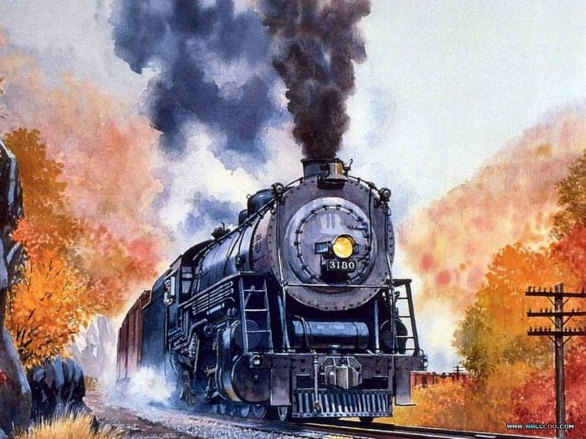
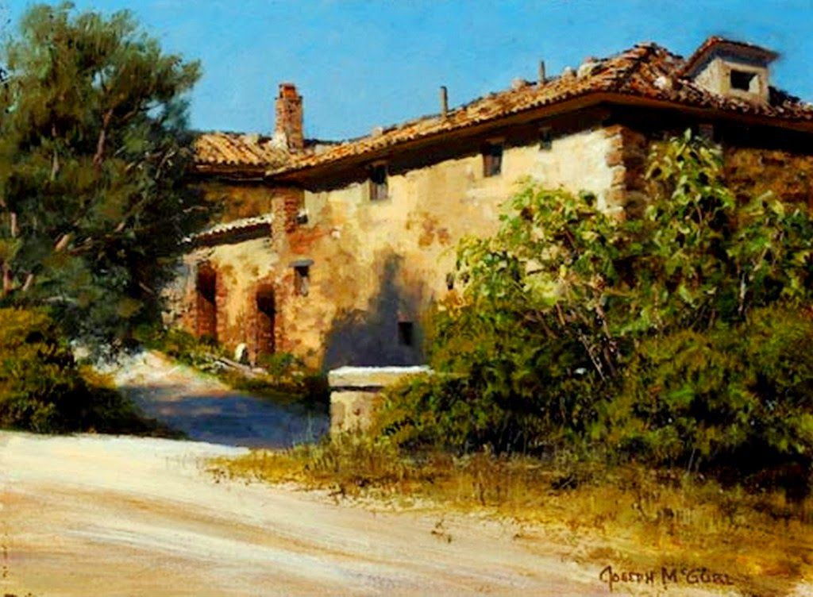
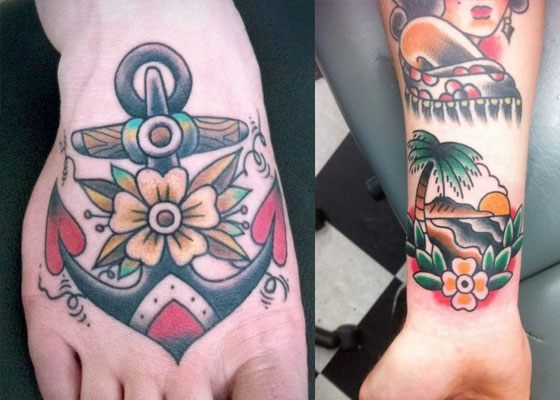
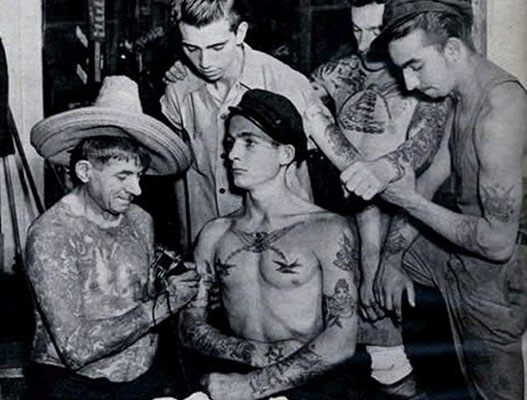
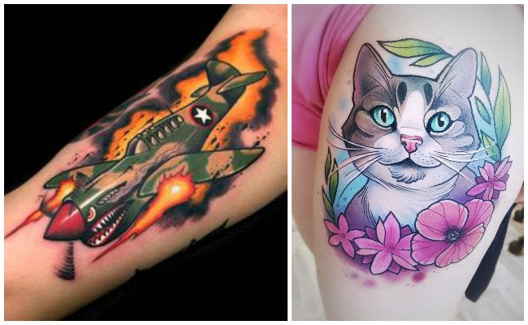

El dibujo es el arte y técnica de dibujar. Mediante el acto de dibujar, queda plasmada una imagen, sobre un papel, lienzo o cualquier otro material, haciendo uso de diferentes técnicas. El dibujo es una forma de expresión gráfica en un plano horizontal, o sea en dos dimensiones.
Es también una de las artes visuales. A lo largo de los años la humanidad lo ha utilizado como una forma de expresión universal y también de transmisión de la cultura, el lenguaje y demás.
El dibujo sirve de herramienta expresión de los pensamientos o de los objetos reales, cuando hay cosas que las palabras no pueden explicar se dice que es mejor dibujar. Siempre el artista realiza un trabajo mental previo a plasmar sus ideas, en donde mezcla ideas, sentimientos, recuerdos u otros para obtener el acabado final.

La acuarela es un material especialmente versátil, y esto puede derivar en que la primera experiencia sea muy gratificante o muy frustrante, ya que todo depende de los objetivos que nos propongamos y de la forma en la que nos acerquemos a la técnica. Un consejo que suelen dar los maestros a sus alumnos es no pensar tanto en los resultados que desean obtener, sino dejarse llevar y disfrutar de cada paso; además, nunca deberíamos pretender hacer una obra maestra de buenas a primeras.
Por eso es importante armarse de paciencia y encarar el aprendizaje con perseverancia, sabiendo de antemano que nos tomará muchas pruebas conseguir un producto satisfactorio. Con respecto al medio, se recomienda usar una hoja de papel de grosor considerable.
El primer paso es realizar un boceto con lápiz, sin presionar mucho, de manera que sea posible hacer tantas correcciones como deseemos. Así como se menciona en el párrafo anterior, no debemos buscar la perfección ni apuntar a un alto grado de complejidad: pocos elementos, sencillos e impactantes, es un buen punto de partida. Una vez que tengamos listo el diseño en lápiz, llega el momento de preparar y aplicar la acuarela.
Lo ideal es colocar una pequeña cantidad sobre la paleta, humedecer ligeramente el pincel y diluir la pintura con algunas gotitas de agua, hasta alcanzar el espesor adecuado para su manipulación. A lo largo del proceso, deberemos dejar que la hoja se seque, para poder trabajar en varias capas, entre otras cosas.
La arquitectura es el arte y la técnica de concebir, diseñar y construir edificaciones que funcionen como hábitat para el ser humano, ya sean viviendas, lugares de trabajo, de recreación o memoriales. El término proviene del griego antiguo, formado por los vocablos arch– (“jefe, autoridad”) y techné (“creación, construcción”), de donde se desprende que es el arte de la construcción. En un sentido estricto, la arquitectura es inherente a la civilización humana y no puede escaparse de ella mientras se viva en sociedad.
Cuando el ser humano erige una choza con maderas para guarecerse de los elementos, cuando pavimenta la tierra para erigir encima una plaza con las estatuas de sus mártires, cuando diseña un templo con que rendir culto a sus dioses, o cuando erige una torre inmensa de oficinas, el hombre pone en práctica sus conocimientos arquitectónicos.
Los diversos estilos y modos de la arquitectura en la historia humana, de hecho, reflejan muchas de las condiciones y momentos de su pensamiento, ya sea en términos artísticos o pragmáticos. De hecho, su conocimiento se basa en tres principios fundamentales: belleza, firmeza y utilidad. Al mismo tiempo, la arquitectura ha sido incluida entre las Bellas Artes de la humanidad, junto a la pintura, la literatura, la música, la escultura, la danza, el cine, la fotografía y la historieta.

Óleo es una palabra que tiene origen en el latín olĕum. El término se refiere al aceite, que es el jugo que se obtiene de una aceituna, una semilla u otra fuente. Por ejemplo: “Creo que voy a ordenar fideos al óleo con albahaca”, “Me gusta la carne salteada al óleo”, “Anoche comimos pizza con ajó y óleo”.
Por extensión a este significado, en el ámbito de la religión suele hablarse de “santos óleos” para nombrar a los aceites que se utilizan en el marco de algunos ritos. Se trata de un aceite que ha sido bendecido y que permite, dentro del catolicismo, desarrollar sacramentos como el bautismo. En concreto, en este sentido tendríamos que decir que el aceite que se utiliza a la hora de bautizar a una persona recibe el nombre de óleo de los catecúmenos.
El concepto de óleo también se emplea en el arte. Un óleo es una obra que fue realizada con pinturas obtenidas a partir de la disolución de pigmentos en una mezcla a base de aceite. Dicha pintura suele aplicarse sobre tela (por lo general de algodón o lino), aunque también es apta para pintar sobre madera, metal o roca, entre otros materiales. El uso del óleo es muy antiguo y se masificó a partir del siglo XIV.
En concreto, este tipo de pintura se puede hacer se puede hacer sobre un lienzo, una tabla, un muro, mármol o cobre, entre otros muchos soportes. Entre los pigmentos que más se emplean por los artistas que se decantan por el óleo para plasmar sus inquietudes y su manera de expresión se encuentran el azul ultramar, el carmín, el cardenillo o el amarillo de cromo. “La Gioconda” de Leonardo Da Vinci, “La persistencia de la memoria” de Salvador Dalí y la serie “Los girasoles” de Vincent Van Gogh son apenas algunos de los cuadros más famosos de la historia realizados con la técnica del óleo. No obstante, tampoco hay que pasar otras pinturas realizadas con óleo, que actualmente están consideradas piezas claves de la historia del arte.

Los tatuajes Old School son aquellos que por su estética y características comunes con los primeros tatuajes en la historia del inyectado de tinta en Occidente han pasado a formar un grupo dentro de los tatuajes bajo unas pautas, temáticas, colores y estilos (incluso las letras de tatuajes Old School son muy reconocibles) definidos que conservan el aspecto clásico del tattoo y hacen de este estilo de tatuaje un género que merece la pena conocer, aunque no lo vayas a poner en práctica y prefieras otros diseños y estilos, es importante, el punto de partida para los diseños actuales ya que actuó como puente entre una práctica tribal y el Arte que conocemos hoy.

No pienses que este estilo es algo antiguo y que ya no se hace, al revés, cada día es mayor el número de gente que busca estos diseños clásicos con todo el sabor de los inicios del tattoo.
Puede parecer que el tatuaje es algo actual y que muchos modernos llevan su cuerpo lleno de calcomanías que se ponen de moda y pasan al olvido en un periodo de (como mucho) cinco años, pero el tatuaje tiene su historia y son muchas las generaciones que han dado color a su piel. A día de hoy el tatuaje es una práctica común entre todos los estatus sociales, en aquel momento, no era habitual ver a gente en la calle luciendo sus tatuajes, tan solo los marineros o la gente «de mal vivir» era la interesada en grabar su piel… Por suerte esto ha cambiado, aunque muchos cerebros de mosquito siguen pensando que el tattoo es una práctica asociada a la delincuencia…
Los tatuajes new school son uno de los estilos de tatuaje que más satisfacciones provoca tanto al espectador, como al tatuador y al cliente, ya que por sus características es capaz de adaptarse a cualquier idea y nos ofrece multitud de posibilidades geniales para tener un gran tatuaje.
Los tatuajes de la nueva escuela se definen por utilizar todos los avances y conocimientos que se han ido produciendo en el mundo del tatuaje en los últimos años. Las nuevas máquinas y los pigmentos brillante y más duraderos de las tintas han permitido hacer nuevos degradados, detalles más pequeños y usar colores que antes sería impensable utilizar en un tattoo.

Hay tatuadores especializados en este estilo de tatuaje new school por lo que conocer un estudio de tatuajes donde se trabaja en concreto con este tipo de tattoos te facilitará la tarea de diseñar el tuyo, pero además, con estos ejemplos de tatuajes de la nueva escuela podrás tener claro el ambiente y la formas y colores típicos de este estilo tan genial.
Los tatuajes de la nueva escuela se denominan así porque son una nueva tendencia estilística con unas características que definen un acabado, no hay un patrón exacto ni un motivo que se tatúe más que otro. Los tatuajes neotradicionales cuentan con una serie de características propias muy particulares y reconocibles que lo hacen merecedor de formar un estilo de tattoo totalmente independiente de cualquier otro.